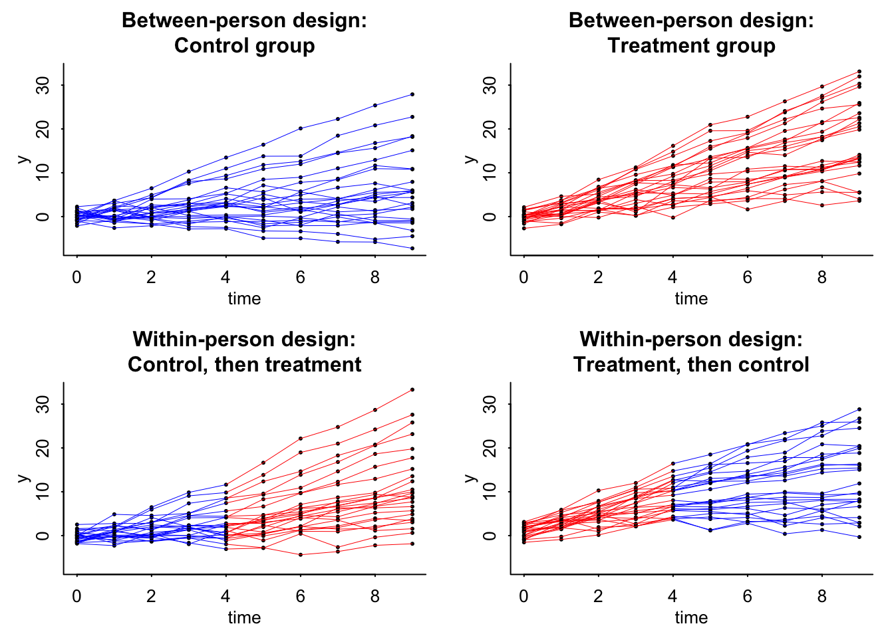

![]()
library("dplyr")
library("rstan")
library("rstanarm")
library("arm")
options(mc.cores = parallel::detectCores())
## 2. Simulate a data structure with N_per_person measurements on each of J people
J <- 50 # number of people in the experiment
N_per_person <- 10 # number of measurements per person
person_id <- rep(1:J, rep(N_per_person, J))
index <- rep(1:N_per_person, J)
time <- index - 1 # time of measurements, from 0 to 9
N <- length(person_id)
a <- rnorm(J, 0, 1)
b <- rnorm(J, 1, 1)
theta <- 1
sigma_y <- 1
## 3. Simulate data from a between-person experiment
z <- sample(rep(c(0,1), J/2), J)
y_pred <- a[person_id] + b[person_id]*time + theta*z[person_id]*time
y <- rnorm(N, y_pred, sigma_y)
z_full <- z[person_id]
exposure <- z_full*time
data_1 <- data.frame(time, person_id, exposure, y)
## 4. Simulate data from a within-person experiment: for each person, do one treatment for the first half of the experiment and the other treatment for the second half.
z_first_half <- z
T_switch <- floor(0.5*max(time))
z_full <- ifelse(time <= T_switch, z_first_half[person_id], 1 - z_first_half[person_id])
for (j in 1:J){
exposure[person_id==j] <- cumsum(z_full[person_id==j])
}
y_pred <- a[person_id] + b[person_id]*time + theta*exposure
y <- rnorm(N, y_pred, sigma_y)
data_2 <- data.frame(time, person_id, exposure, y)This post is basically a self exercise of what Andrew Gelman has already posted here. Fake data simulations are incredible tools to understand your study. It forces you to think about what is the size of the effect you wish to see, what kind of variance is in your model, if you can really detect it, will your design work, and the list goes on. Similar to any practice, when you have to think critically and put things to paper you tend to see the weaknesses of your arguments. It also helos you to anticipate issues. All of these things are priceless.
So taking his work and looking at a between person and within person design let’s copy his code and build the fake data.
Just for clarity I am going to show a few records of the two different data sets:
| time | person_id | exposure | y |
|---|---|---|---|
| 0 | 1 | 0 | 0.0542844 |
| 1 | 1 | 1 | 0.6901673 |
| 2 | 1 | 2 | 4.6463786 |
| 3 | 1 | 3 | 8.2562947 |
| 4 | 1 | 4 | 9.7387502 |
| 5 | 1 | 5 | 13.6177556 |
data_2 %>%
head() %>%
knitr::kable(caption = "Sample of Within Persons Data")| time | person_id | exposure | y |
|---|---|---|---|
| 0 | 1 | 1 | 0.7615726 |
| 1 | 1 | 2 | 2.2823011 |
| 2 | 1 | 3 | 6.7334492 |
| 3 | 1 | 4 | 9.7871753 |
| 4 | 1 | 5 | 10.1855997 |
| 5 | 1 | 5 | 11.9582499 |
Now we can plot the data:
par(mfrow=c(2, 2))
par(mar=c(3,3,3,1), mgp=c(1.5, .5, 0), tck=-.01)
plot(range(time), range(data_1$y, data_2$y), xlab="time", ylab="y", type="n", bty="l", main="Between-person design:\nControl group")
for (j in 1:J){
ok <- data_1$person_id==j
if (z[j] == 0){
points(time[ok], data_1$y[ok], pch=20, cex=.5)
lines(time[ok], data_1$y[ok], lwd=.5, col="blue")
}
}
plot(range(time), range(data_1$y, data_2$y), xlab="time", ylab="y", type="n", bty="l", main="Between-person design:\nTreatment group")
for (j in 1:J){
ok <- data_1$person_id==j
if (z[j] == 1){
points(time[ok], data_1$y[ok], pch=20, cex=.5)
lines(time[ok], data_1$y[ok], lwd=.5, col="red")
}
}
plot(range(time), range(data_1$y, data_2$y), xlab="time", ylab="y", type="n", bty="l", main="Within-person design:\nControl, then treatment")
for (j in 1:J){
ok <- person_id==j
if (z[j] == 0) {
points(time[ok], data_2$y[ok], pch=20, cex=.5)
lines(time[ok&time<=T_switch], data_2$y[ok&time<=T_switch], lwd=.5, col="blue")
lines(time[ok&time>=T_switch], data_2$y[ok&time>=T_switch], lwd=.5, col="red")
}
}
plot(range(time), range(data_1$y, data_2$y), xlab="time", ylab="y", type="n", bty="l", main="Within-person design:\nTreatment, then control")
for (j in 1:J){
ok <- person_id==j
if (z[j] == 1) {
points(time[ok], data_2$y[ok], pch=20, cex=.5)
lines(time[ok&time<=T_switch], data_2$y[ok&time<=T_switch], lwd=.5, col="red")
lines(time[ok&time>=T_switch], data_2$y[ok&time>=T_switch], lwd=.5, col="blue")
for (i in 1:N_per_person) {
ok2 <- ok & index==i
}
}
}
And then start the analysis using our HLM:
fit_1 <- stan_glmer(y ~ (1 + time | person_id) + time + exposure, data=data_1)
fit_2 <- stan_glmer(y ~ (1 + time | person_id) + time + exposure, data=data_2)Warning: Bulk Effective Samples Size (ESS) is too low, indicating posterior means and medians may be unreliable.
Running the chains for more iterations may help. See
https://mc-stan.org/misc/warnings.html#bulk-essBetween Persons Design Summary
print(fit_1)stan_glmer
family: gaussian [identity]
formula: y ~ (1 + time | person_id) + time + exposure
observations: 500
------
Median MAD_SD
(Intercept) -0.1 0.1
time 0.7 0.2
exposure 1.3 0.3
Auxiliary parameter(s):
Median MAD_SD
sigma 1.0 0.0
Error terms:
Groups Name Std.Dev. Corr
person_id (Intercept) 0.79
time 0.97 0.18
Residual 0.99
Num. levels: person_id 50
------
* For help interpreting the printed output see ?print.stanreg
* For info on the priors used see ?prior_summary.stanregWithin Persons Design Summary
print(fit_2)stan_glmer
family: gaussian [identity]
formula: y ~ (1 + time | person_id) + time + exposure
observations: 500
------
Median MAD_SD
(Intercept) 0.0 0.1
time 0.8 0.1
exposure 0.9 0.0
Auxiliary parameter(s):
Median MAD_SD
sigma 0.9 0.0
Error terms:
Groups Name Std.Dev. Corr
person_id (Intercept) 0.89
time 0.97 0.04
Residual 0.91
Num. levels: person_id 50
------
* For help interpreting the printed output see ?print.stanreg
* For info on the priors used see ?prior_summary.stanregThe big take away for both is that the standard error for the within person experiment is less than that of the between person. This is great. The other interesting thing is that if theta (\(\theta\)) changes, then this standard error will be the same. Yikes! So smaller effect with the same standard error means a weakened confidence in the effect. You can only go so far with modeling and design and must move into understanding the causal pathway.
In Andrew’s words
Except in the simplest settings, setting up a fake-data simulation requires you to decide on a bunch of parameters. Graphing the fake data is in practice a necessity in order to understand the model you’re simulating and to see where to improve it. For example, if you’re not happy with the above graphs—they don’t look like what your data really could look like—then, fine, change the parameters.
In very simple settings you can simply suppose that the effect size is 0.1 standard deviations and go from there. But once you get to nonlinearity, interactions, repeated measurements, multilevel structures, varying treatment effects, etc., you’ll have to throw away that power calculator and dive right in with the simulations.
Reuse
Citation
BibTeX citation:
@online{dewitt2018,
author = {Michael DeWitt},
title = {The Power of Fake Data Simulations},
date = {2018-09-24},
url = {https://michaeldewittjr.com/programming/2018-09-24-the-power-of-fake-data-simulations},
langid = {en}
}
For attribution, please cite this work as:
Michael DeWitt. 2018. “The Power of Fake Data Simulations.”
September 24, 2018. https://michaeldewittjr.com/programming/2018-09-24-the-power-of-fake-data-simulations.